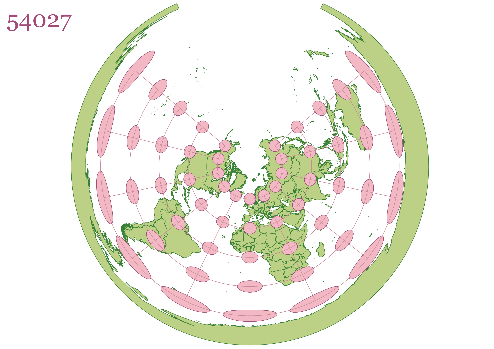

Homework 3: Displaying maps in different projections
Describe in your own words how you displayed the map in different projections using QGIS
First, I downloaded the data file that was linked in the assignment. In a new GIS file, I imported the shapefile located in the worldprojections file, under data, then naturalearth.
Next, I used the indicatrix mapper plugin from the tutorial videos to add layers called "caps" and "graticules." I went clicked the bottom right button that had "ESRI:" followed by a projection number. I searched up the projection numbers provided in the directions from the html file found in the homework directions——which I imported into my Visual Studio repository.
After I changed the projection, I clicked on "New Print Layout" in QGIS to create a png image of each map that I made. I then followed the format already in my Visual Studio Code repository to add my image and descriptions to each map.
WGS 84
The Earth's shape in WGS 84 is represented as an ellipsoid. It uses a coordinate system with latitude and longitude.
Mercator Projection
This Mercator map is one of the most common types of world maps. It uses the cylindrical projection method. The Mercator projection preserves distance and direction very well, which is why it was used primarily for navigational purposes. It also preserves shape relatively well, but is distorted as you stray from the equator. It, however, significantly distorts area.

Aitoff Projection
Based on its equal-area property, the Aitoff projection is best when one needs to maintain accurate area relationships. This is because it is designed to accurately preserve the relative sizes of regions on the Earth's surface. It significantly distorts shape, especially the farther you get from the Prime Meridian. Distance and direction are also distorted.

Azimuthal Projection
The Azumuthal projection is different in that it is like putting a piece of paper over part of the globe. In this case, it centers on the North Pole. As you move farther from the center, the shape and area become more distorted. Distance and direction are relatively preserved when one measures from the center to any point on the map.

Winkel Projection
The Winkel projection strikes a balance of distortions, with shape, distance, and direction becoming more distorted as you get farther from the equator. However, it seems like areas on the map are proportional to their actual sizes on the Earth's surface.
Equidistant Conic
The Equidistant Conic projection looks similar to the Aimuthal projection. However, projects the Earth's surface onto a cone instead of a plane. It seems better at preserving distances based on how the caps are less distorted than the Azimuthal. Distortion in general is minimized the closer youa re to the tangent or secant lines.

Cylindrical Equal Area
The Cylindrical Equal Area projection is projected from a cylinder——like the Mercator projection. But while the Mercator prioritizes distance and direction, this projection emphasizes the preservation of area. Shape, distance, and direction are stretched much more, especially as you move away from the equator.
World Sinusodal
This Sinusodal projection is an equal-area map projection, which means it preserves area well. As you move away from the Central Meridian, shape, distance, and direction become increasingly distorted.

World Polyconic
The Polyconic projection does not preserve any of the properties very well. Near the prime meridian, shape and area are somewhat preserved, but are distorted the farther you get from it.
Data used for this project
Download Natrual Earth 1:10m Cultural Vector